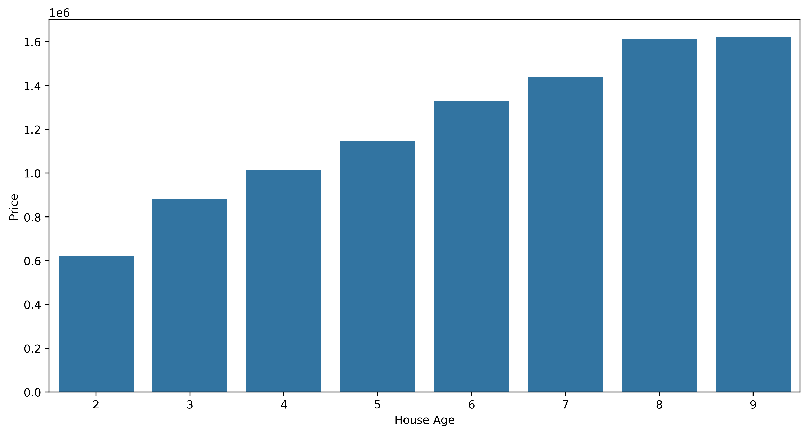

import numpy as np
import pandas as pd
import matplotlib.pyplot as plt
import seaborn as sns
from sklearn.preprocessing import OrdinalEncoder
from sklearn.preprocessing import StandardScaler
from sklearn.model_selection import train_test_split
from sklearn.tree import DecisionTreeRegressor
from sklearn.ensemble import RandomForestRegressor
import xgboost as xgb
from xgboost import XGBRegressor
from sklearn.metrics import r2_score
from sklearn.metrics import mean_squared_error, mean_absolute_error
from sklearn.linear_model import ElasticNet
from sklearn.model_selection import GridSearchCV
from sklearn.metrics import mean_squared_error
from sklearn.preprocessing import StandardScalerImport Libraries and Load dataset
# Reading csv file
data = pd.read_csv('USA_Housing.csv')
data| Avg. Area Income | Avg. Area House Age | Avg. Area Number of Rooms | Avg. Area Number of Bedrooms | Area Population | Price | Address | |
|---|---|---|---|---|---|---|---|
| 0 | 79545.458574 | 5.682861 | 7.009188 | 4.09 | 23086.800503 | 1.059034e+06 | 208 Michael Ferry Apt. 674\r\nLaurabury, NE 37... |
| 1 | 79248.642455 | 6.002900 | 6.730821 | 3.09 | 40173.072174 | 1.505891e+06 | 188 Johnson Views Suite 079\r\nLake Kathleen, ... |
| 2 | 61287.067179 | 5.865890 | 8.512727 | 5.13 | 36882.159400 | 1.058988e+06 | 9127 Elizabeth Stravenue\r\nDanieltown, WI 064... |
| 3 | 63345.240046 | 7.188236 | 5.586729 | 3.26 | 34310.242831 | 1.260617e+06 | USS Barnett\r\nFPO AP 44820 |
| 4 | 59982.197226 | 5.040555 | 7.839388 | 4.23 | 26354.109472 | 6.309435e+05 | USNS Raymond\r\nFPO AE 09386 |
| ... | ... | ... | ... | ... | ... | ... | ... |
| 4995 | 60567.944140 | 7.830362 | 6.137356 | 3.46 | 22837.361035 | 1.060194e+06 | USNS Williams\r\nFPO AP 30153-7653 |
| 4996 | 78491.275435 | 6.999135 | 6.576763 | 4.02 | 25616.115489 | 1.482618e+06 | PSC 9258, Box 8489\r\nAPO AA 42991-3352 |
| 4997 | 63390.686886 | 7.250591 | 4.805081 | 2.13 | 33266.145490 | 1.030730e+06 | 4215 Tracy Garden Suite 076\r\nJoshualand, VA ... |
| 4998 | 68001.331235 | 5.534388 | 7.130144 | 5.44 | 42625.620156 | 1.198657e+06 | USS Wallace\r\nFPO AE 73316 |
| 4999 | 65510.581804 | 5.992305 | 6.792336 | 4.07 | 46501.283803 | 1.298950e+06 | 37778 George Ridges Apt. 509\r\nEast Holly, NV... |
5000 rows × 7 columns
Exploratory Data Analysis
data.info()#print a concise summary of a DataFrame<class 'pandas.core.frame.DataFrame'>
RangeIndex: 5000 entries, 0 to 4999
Data columns (total 7 columns):
# Column Non-Null Count Dtype
--- ------ -------------- -----
0 Avg. Area Income 5000 non-null float64
1 Avg. Area House Age 5000 non-null float64
2 Avg. Area Number of Rooms 5000 non-null float64
3 Avg. Area Number of Bedrooms 5000 non-null float64
4 Area Population 5000 non-null float64
5 Price 5000 non-null float64
6 Address 5000 non-null object
dtypes: float64(6), object(1)
memory usage: 273.6+ KB# Checking null values
data.isnull().sum()Avg. Area Income 0
Avg. Area House Age 0
Avg. Area Number of Rooms 0
Avg. Area Number of Bedrooms 0
Area Population 0
Price 0
Address 0
dtype: int64data.describe()# Generate descriptive statistics summarizing central tendency, dispersion, and shape of dataset's distribution.| Avg. Area Income | Avg. Area House Age | Avg. Area Number of Rooms | Avg. Area Number of Bedrooms | Area Population | Price | |
|---|---|---|---|---|---|---|
| count | 5000.000000 | 5000.000000 | 5000.000000 | 5000.000000 | 5000.000000 | 5.000000e+03 |
| mean | 68583.108984 | 5.977222 | 6.987792 | 3.981330 | 36163.516039 | 1.232073e+06 |
| std | 10657.991214 | 0.991456 | 1.005833 | 1.234137 | 9925.650114 | 3.531176e+05 |
| min | 17796.631190 | 2.644304 | 3.236194 | 2.000000 | 172.610686 | 1.593866e+04 |
| 25% | 61480.562388 | 5.322283 | 6.299250 | 3.140000 | 29403.928702 | 9.975771e+05 |
| 50% | 68804.286404 | 5.970429 | 7.002902 | 4.050000 | 36199.406689 | 1.232669e+06 |
| 75% | 75783.338666 | 6.650808 | 7.665871 | 4.490000 | 42861.290769 | 1.471210e+06 |
| max | 107701.748378 | 9.519088 | 10.759588 | 6.500000 | 69621.713378 | 2.469066e+06 |
# Data Claening
df = pd.DataFrame()
df['Income'] = data['Avg. Area Income'].round(2)# Round 'Avg. Area Income' to 2 decimal places and store in 'Income'.
df['House Age'] = data['Avg. Area House Age'].apply(int)# Converting 'Avg. Area House Age' to integers and adding it to 'df' as 'House Age'.
df['No. of Rooms'] = data['Avg. Area Number of Rooms'].apply(int)# Converting 'Avg. Area Number of Rooms' to integers and adding it to 'df' as 'No. of Rooms'.
df['No. of Bedrooms'] = data['Avg. Area Number of Bedrooms'].apply(int)# Converting 'Avg. Area Number of Bedrooms' to integers and adding it to 'df' as 'No. of Bedrooms'.
df['Population'] = data['Area Population'].apply(int)# Converting 'Area Population' to integers and adding it to 'df' as 'Population'.
df['Price'] = data['Price'].apply(int)# Converting 'Price' to integers and adding it to 'df' as 'Price'.sns.displot(data['Avg. Area Number of Bedrooms'], kde=False, bins=40)C:\Users\Jithin\AppData\Local\Programs\Python\Python311\Lib\site-packages\seaborn\axisgrid.py:123: UserWarning: The figure layout has changed to tight
self._figure.tight_layout(*args, **kwargs)# Price plot
plt.figure(figsize = (12, 6), dpi = 200)
sns.distplot(data.Price)C:\Users\Jithin\AppData\Local\Temp\ipykernel_17384\3496450648.py:3: UserWarning:
`distplot` is a deprecated function and will be removed in seaborn v0.14.0.
Please adapt your code to use either `displot` (a figure-level function with
similar flexibility) or `histplot` (an axes-level function for histograms).
For a guide to updating your code to use the new functions, please see
https://gist.github.com/mwaskom/de44147ed2974457ad6372750bbe5751
sns.distplot(data.Price)
# Price wrt Income
plt.figure(figsize = (12, 6), dpi = 200)
sns.lineplot(x = 'Income', y = 'Price', data = df)
# Price wrt House Age
plt.figure(figsize = (12, 6), dpi = 200)
sns.barplot(x = 'House Age', y = 'Price', data = df, ci = None)C:\Users\Jithin\AppData\Local\Temp\ipykernel_17384\1414414798.py:3: FutureWarning:
The `ci` parameter is deprecated. Use `errorbar=None` for the same effect.
sns.barplot(x = 'House Age', y = 'Price', data = df, ci = None)
# Price wrt No. of Rooms
plt.figure(figsize = (12, 6), dpi = 200)
sns.lineplot(x = 'No. of Rooms', y = 'Price', data = df)# Price wrt No. of Bedrooms
plt.figure(figsize = (12, 6), dpi = 200)
sns.barplot(x = 'No. of Bedrooms', y = 'Price', data = df, ci = None)C:\Users\Jithin\AppData\Local\Temp\ipykernel_17384\139840174.py:3: FutureWarning:
The `ci` parameter is deprecated. Use `errorbar=None` for the same effect.
sns.barplot(x = 'No. of Bedrooms', y = 'Price', data = df, ci = None)# Price wrt Population
plt.figure(figsize = (12, 6), dpi = 200)
sns.scatterplot(x = 'Population', y = 'Price', data = df)def categorize_house_age(df):
max_age = df['Avg. Area House Age'].max()
bins = [0, 5, 10, max_age]
labels = ['New', 'Mid-Age', 'Old']
if max_age <= 10: # Adjusting bins if max age is less than or equal to 10
bins = [0, max_age / 3, 2 * max_age / 3, max_age]
df['House_Age_Category'] = pd.cut(df['Avg. Area House Age'], bins=bins, labels=labels, include_lowest=True)
return df
data = categorize_house_age(data)# Pairplot segmented by a new categorical feature (if applicable)
sns.pairplot(data, hue='House_Age_Category')
plt.show()C:\Users\Jithin\AppData\Local\Programs\Python\Python311\Lib\site-packages\seaborn\axisgrid.py:123: UserWarning: The figure layout has changed to tight
self._figure.tight_layout(*args, **kwargs)data| Avg. Area Income | Avg. Area House Age | Avg. Area Number of Rooms | Avg. Area Number of Bedrooms | Area Population | Price | Address | House_Age_Category | |
|---|---|---|---|---|---|---|---|---|
| 0 | 79545.458574 | 5.682861 | 7.009188 | 4.09 | 23086.800503 | 1.059034e+06 | 208 Michael Ferry Apt. 674\r\nLaurabury, NE 37... | Mid-Age |
| 1 | 79248.642455 | 6.002900 | 6.730821 | 3.09 | 40173.072174 | 1.505891e+06 | 188 Johnson Views Suite 079\r\nLake Kathleen, ... | Mid-Age |
| 2 | 61287.067179 | 5.865890 | 8.512727 | 5.13 | 36882.159400 | 1.058988e+06 | 9127 Elizabeth Stravenue\r\nDanieltown, WI 064... | Mid-Age |
| 3 | 63345.240046 | 7.188236 | 5.586729 | 3.26 | 34310.242831 | 1.260617e+06 | USS Barnett\r\nFPO AP 44820 | Old |
| 4 | 59982.197226 | 5.040555 | 7.839388 | 4.23 | 26354.109472 | 6.309435e+05 | USNS Raymond\r\nFPO AE 09386 | Mid-Age |
| ... | ... | ... | ... | ... | ... | ... | ... | ... |
| 4995 | 60567.944140 | 7.830362 | 6.137356 | 3.46 | 22837.361035 | 1.060194e+06 | USNS Williams\r\nFPO AP 30153-7653 | Old |
| 4996 | 78491.275435 | 6.999135 | 6.576763 | 4.02 | 25616.115489 | 1.482618e+06 | PSC 9258, Box 8489\r\nAPO AA 42991-3352 | Old |
| 4997 | 63390.686886 | 7.250591 | 4.805081 | 2.13 | 33266.145490 | 1.030730e+06 | 4215 Tracy Garden Suite 076\r\nJoshualand, VA ... | Old |
| 4998 | 68001.331235 | 5.534388 | 7.130144 | 5.44 | 42625.620156 | 1.198657e+06 | USS Wallace\r\nFPO AE 73316 | Mid-Age |
| 4999 | 65510.581804 | 5.992305 | 6.792336 | 4.07 | 46501.283803 | 1.298950e+06 | 37778 George Ridges Apt. 509\r\nEast Holly, NV... | Mid-Age |
5000 rows × 8 columns
# Boxplot for Prices across different House Age Categories
sns.barplot(x='House_Age_Category', y='Price', data=data)
plt.title('House Prices across Age Categories')
plt.show()# One-Hot Encoding for categorical variables
data = pd.get_dummies(data, columns=['House_Age_Category'])data| Avg. Area Income | Avg. Area House Age | Avg. Area Number of Rooms | Avg. Area Number of Bedrooms | Area Population | Price | Address | House_Age_Category_New | House_Age_Category_Mid-Age | House_Age_Category_Old | |
|---|---|---|---|---|---|---|---|---|---|---|
| 0 | 79545.458574 | 5.682861 | 7.009188 | 4.09 | 23086.800503 | 1.059034e+06 | 208 Michael Ferry Apt. 674\r\nLaurabury, NE 37... | False | True | False |
| 1 | 79248.642455 | 6.002900 | 6.730821 | 3.09 | 40173.072174 | 1.505891e+06 | 188 Johnson Views Suite 079\r\nLake Kathleen, ... | False | True | False |
| 2 | 61287.067179 | 5.865890 | 8.512727 | 5.13 | 36882.159400 | 1.058988e+06 | 9127 Elizabeth Stravenue\r\nDanieltown, WI 064... | False | True | False |
| 3 | 63345.240046 | 7.188236 | 5.586729 | 3.26 | 34310.242831 | 1.260617e+06 | USS Barnett\r\nFPO AP 44820 | False | False | True |
| 4 | 59982.197226 | 5.040555 | 7.839388 | 4.23 | 26354.109472 | 6.309435e+05 | USNS Raymond\r\nFPO AE 09386 | False | True | False |
| ... | ... | ... | ... | ... | ... | ... | ... | ... | ... | ... |
| 4995 | 60567.944140 | 7.830362 | 6.137356 | 3.46 | 22837.361035 | 1.060194e+06 | USNS Williams\r\nFPO AP 30153-7653 | False | False | True |
| 4996 | 78491.275435 | 6.999135 | 6.576763 | 4.02 | 25616.115489 | 1.482618e+06 | PSC 9258, Box 8489\r\nAPO AA 42991-3352 | False | False | True |
| 4997 | 63390.686886 | 7.250591 | 4.805081 | 2.13 | 33266.145490 | 1.030730e+06 | 4215 Tracy Garden Suite 076\r\nJoshualand, VA ... | False | False | True |
| 4998 | 68001.331235 | 5.534388 | 7.130144 | 5.44 | 42625.620156 | 1.198657e+06 | USS Wallace\r\nFPO AE 73316 | False | True | False |
| 4999 | 65510.581804 | 5.992305 | 6.792336 | 4.07 | 46501.283803 | 1.298950e+06 | 37778 George Ridges Apt. 509\r\nEast Holly, NV... | False | True | False |
5000 rows × 10 columns
Setting Target and Variable and Train Test Split
# Selecting features and target variable
X = data.drop(['Price', 'Address'], axis=1)
y = data['Price']# Splitting the dataset into training and testing sets
from sklearn.model_selection import train_test_split
X_train, X_test, y_train, y_test = train_test_split(X, y, test_size=0.2, random_state=42)Support Vector Regression
pip install --upgrade tensorflowRequirement already satisfied: tensorflow in c:\users\jithin\appdata\local\programs\python\python311\lib\site-packages (2.15.0)
Requirement already satisfied: tensorflow-intel==2.15.0 in c:\users\jithin\appdata\local\programs\python\python311\lib\site-packages (from tensorflow) (2.15.0)
Requirement already satisfied: absl-py>=1.0.0 in c:\users\jithin\appdata\local\programs\python\python311\lib\site-packages (from tensorflow-intel==2.15.0->tensorflow) (2.0.0)
Requirement already satisfied: astunparse>=1.6.0 in c:\users\jithin\appdata\local\programs\python\python311\lib\site-packages (from tensorflow-intel==2.15.0->tensorflow) (1.6.3)
Requirement already satisfied: flatbuffers>=23.5.26 in c:\users\jithin\appdata\local\programs\python\python311\lib\site-packages (from tensorflow-intel==2.15.0->tensorflow) (23.5.26)
Requirement already satisfied: gast!=0.5.0,!=0.5.1,!=0.5.2,>=0.2.1 in c:\users\jithin\appdata\local\programs\python\python311\lib\site-packages (from tensorflow-intel==2.15.0->tensorflow) (0.5.4)
Requirement already satisfied: google-pasta>=0.1.1 in c:\users\jithin\appdata\local\programs\python\python311\lib\site-packages (from tensorflow-intel==2.15.0->tensorflow) (0.2.0)
Requirement already satisfied: h5py>=2.9.0 in c:\users\jithin\appdata\local\programs\python\python311\lib\site-packages (from tensorflow-intel==2.15.0->tensorflow) (3.10.0)
Requirement already satisfied: libclang>=13.0.0 in c:\users\jithin\appdata\local\programs\python\python311\lib\site-packages (from tensorflow-intel==2.15.0->tensorflow) (16.0.6)
Requirement already satisfied: ml-dtypes~=0.2.0 in c:\users\jithin\appdata\local\programs\python\python311\lib\site-packages (from tensorflow-intel==2.15.0->tensorflow) (0.2.0)
Requirement already satisfied: numpy<2.0.0,>=1.23.5 in c:\users\jithin\appdata\local\programs\python\python311\lib\site-packages (from tensorflow-intel==2.15.0->tensorflow) (1.25.2)
Requirement already satisfied: opt-einsum>=2.3.2 in c:\users\jithin\appdata\local\programs\python\python311\lib\site-packages (from tensorflow-intel==2.15.0->tensorflow) (3.3.0)
Requirement already satisfied: packaging in c:\users\jithin\appdata\local\programs\python\python311\lib\site-packages (from tensorflow-intel==2.15.0->tensorflow) (23.1)
Requirement already satisfied: protobuf!=4.21.0,!=4.21.1,!=4.21.2,!=4.21.3,!=4.21.4,!=4.21.5,<5.0.0dev,>=3.20.3 in c:\users\jithin\appdata\local\programs\python\python311\lib\site-packages (from tensorflow-intel==2.15.0->tensorflow) (4.23.4)
Requirement already satisfied: setuptools in c:\users\jithin\appdata\local\programs\python\python311\lib\site-packages (from tensorflow-intel==2.15.0->tensorflow) (65.5.0)
Requirement already satisfied: six>=1.12.0 in c:\users\jithin\appdata\local\programs\python\python311\lib\site-packages (from tensorflow-intel==2.15.0->tensorflow) (1.16.0)
Requirement already satisfied: termcolor>=1.1.0 in c:\users\jithin\appdata\local\programs\python\python311\lib\site-packages (from tensorflow-intel==2.15.0->tensorflow) (2.4.0)
Requirement already satisfied: typing-extensions>=3.6.6 in c:\users\jithin\appdata\local\programs\python\python311\lib\site-packages (from tensorflow-intel==2.15.0->tensorflow) (4.8.0)
Requirement already satisfied: wrapt<1.15,>=1.11.0 in c:\users\jithin\appdata\local\programs\python\python311\lib\site-packages (from tensorflow-intel==2.15.0->tensorflow) (1.14.1)
Requirement already satisfied: tensorflow-io-gcs-filesystem>=0.23.1 in c:\users\jithin\appdata\local\programs\python\python311\lib\site-packages (from tensorflow-intel==2.15.0->tensorflow) (0.31.0)
Requirement already satisfied: grpcio<2.0,>=1.24.3 in c:\users\jithin\appdata\local\programs\python\python311\lib\site-packages (from tensorflow-intel==2.15.0->tensorflow) (1.58.0)
Requirement already satisfied: tensorboard<2.16,>=2.15 in c:\users\jithin\appdata\local\programs\python\python311\lib\site-packages (from tensorflow-intel==2.15.0->tensorflow) (2.15.1)
Requirement already satisfied: tensorflow-estimator<2.16,>=2.15.0 in c:\users\jithin\appdata\local\programs\python\python311\lib\site-packages (from tensorflow-intel==2.15.0->tensorflow) (2.15.0)
Requirement already satisfied: keras<2.16,>=2.15.0 in c:\users\jithin\appdata\local\programs\python\python311\lib\site-packages (from tensorflow-intel==2.15.0->tensorflow) (2.15.0)
Requirement already satisfied: wheel<1.0,>=0.23.0 in c:\users\jithin\appdata\local\programs\python\python311\lib\site-packages (from astunparse>=1.6.0->tensorflow-intel==2.15.0->tensorflow) (0.42.0)
Requirement already satisfied: google-auth<3,>=1.6.3 in c:\users\jithin\appdata\local\programs\python\python311\lib\site-packages (from tensorboard<2.16,>=2.15->tensorflow-intel==2.15.0->tensorflow) (2.25.2)
Requirement already satisfied: google-auth-oauthlib<2,>=0.5 in c:\users\jithin\appdata\local\programs\python\python311\lib\site-packages (from tensorboard<2.16,>=2.15->tensorflow-intel==2.15.0->tensorflow) (1.1.0)
Requirement already satisfied: markdown>=2.6.8 in c:\users\jithin\appdata\local\programs\python\python311\lib\site-packages (from tensorboard<2.16,>=2.15->tensorflow-intel==2.15.0->tensorflow) (3.5.1)
Requirement already satisfied: requests<3,>=2.21.0 in c:\users\jithin\appdata\local\programs\python\python311\lib\site-packages (from tensorboard<2.16,>=2.15->tensorflow-intel==2.15.0->tensorflow) (2.31.0)
Requirement already satisfied: tensorboard-data-server<0.8.0,>=0.7.0 in c:\users\jithin\appdata\local\programs\python\python311\lib\site-packages (from tensorboard<2.16,>=2.15->tensorflow-intel==2.15.0->tensorflow) (0.7.2)
Requirement already satisfied: werkzeug>=1.0.1 in c:\users\jithin\appdata\local\programs\python\python311\lib\site-packages (from tensorboard<2.16,>=2.15->tensorflow-intel==2.15.0->tensorflow) (3.0.1)
Requirement already satisfied: cachetools<6.0,>=2.0.0 in c:\users\jithin\appdata\local\programs\python\python311\lib\site-packages (from google-auth<3,>=1.6.3->tensorboard<2.16,>=2.15->tensorflow-intel==2.15.0->tensorflow) (5.3.2)
Requirement already satisfied: pyasn1-modules>=0.2.1 in c:\users\jithin\appdata\local\programs\python\python311\lib\site-packages (from google-auth<3,>=1.6.3->tensorboard<2.16,>=2.15->tensorflow-intel==2.15.0->tensorflow) (0.3.0)
Requirement already satisfied: rsa<5,>=3.1.4 in c:\users\jithin\appdata\local\programs\python\python311\lib\site-packages (from google-auth<3,>=1.6.3->tensorboard<2.16,>=2.15->tensorflow-intel==2.15.0->tensorflow) (4.9)
Requirement already satisfied: requests-oauthlib>=0.7.0 in c:\users\jithin\appdata\local\programs\python\python311\lib\site-packages (from google-auth-oauthlib<2,>=0.5->tensorboard<2.16,>=2.15->tensorflow-intel==2.15.0->tensorflow) (1.3.1)
Requirement already satisfied: charset-normalizer<4,>=2 in c:\users\jithin\appdata\local\programs\python\python311\lib\site-packages (from requests<3,>=2.21.0->tensorboard<2.16,>=2.15->tensorflow-intel==2.15.0->tensorflow) (3.2.0)
Requirement already satisfied: idna<4,>=2.5 in c:\users\jithin\appdata\local\programs\python\python311\lib\site-packages (from requests<3,>=2.21.0->tensorboard<2.16,>=2.15->tensorflow-intel==2.15.0->tensorflow) (3.4)
Requirement already satisfied: urllib3<3,>=1.21.1 in c:\users\jithin\appdata\local\programs\python\python311\lib\site-packages (from requests<3,>=2.21.0->tensorboard<2.16,>=2.15->tensorflow-intel==2.15.0->tensorflow) (1.26.16)
Requirement already satisfied: certifi>=2017.4.17 in c:\users\jithin\appdata\local\programs\python\python311\lib\site-packages (from requests<3,>=2.21.0->tensorboard<2.16,>=2.15->tensorflow-intel==2.15.0->tensorflow) (2023.7.22)
Requirement already satisfied: MarkupSafe>=2.1.1 in c:\users\jithin\appdata\local\programs\python\python311\lib\site-packages (from werkzeug>=1.0.1->tensorboard<2.16,>=2.15->tensorflow-intel==2.15.0->tensorflow) (2.1.3)
Requirement already satisfied: pyasn1<0.6.0,>=0.4.6 in c:\users\jithin\appdata\local\programs\python\python311\lib\site-packages (from pyasn1-modules>=0.2.1->google-auth<3,>=1.6.3->tensorboard<2.16,>=2.15->tensorflow-intel==2.15.0->tensorflow) (0.5.1)
Requirement already satisfied: oauthlib>=3.0.0 in c:\users\jithin\appdata\local\programs\python\python311\lib\site-packages (from requests-oauthlib>=0.7.0->google-auth-oauthlib<2,>=0.5->tensorboard<2.16,>=2.15->tensorflow-intel==2.15.0->tensorflow) (3.2.2)
Note: you may need to restart the kernel to use updated packages.from sklearn.svm import SVR
from sklearn.ensemble import GradientBoostingRegressor
from tensorflow.keras.models import Sequential
from tensorflow.keras.layers import Dense
from sklearn.model_selection import GridSearchCV, RandomizedSearchCVWARNING:tensorflow:From C:\Users\Jithin\AppData\Local\Programs\Python\Python311\Lib\site-packages\keras\src\losses.py:2976: The name tf.losses.sparse_softmax_cross_entropy is deprecated. Please use tf.compat.v1.losses.sparse_softmax_cross_entropy instead.
Neural Network
# Without Hyperparameter tuning
# Data preprocessing: Standardize the features
scaler = StandardScaler()
X_train_scaled = scaler.fit_transform(X_train)
X_test_scaled = scaler.transform(X_test)
# Neural network model architecture
model = Sequential()
model.add(Dense(64, activation='relu', input_shape=(X_train.shape[1],)))
model.add(Dense(32, activation='relu'))
model.add(Dense(1)) # Output layer for regression
# Compile the model
model.compile(optimizer='adam', loss='mean_squared_error')
# Train the model
history = model.fit(X_train_scaled, y_train, epochs=100, batch_size=32, validation_split=0.2, verbose=0)
# Evaluate the model on test data
predictions = model.predict(X_test_scaled)
mse = mean_squared_error(y_test, predictions)
r2 = r2_score(y_test, predictions)
print(f'Mean Squared Error: {mse}')
print(f'R-squared: {r2}')WARNING:tensorflow:From C:\Users\Jithin\AppData\Local\Programs\Python\Python311\Lib\site-packages\keras\src\backend.py:873: The name tf.get_default_graph is deprecated. Please use tf.compat.v1.get_default_graph instead.
WARNING:tensorflow:From C:\Users\Jithin\AppData\Local\Programs\Python\Python311\Lib\site-packages\keras\src\optimizers\__init__.py:309: The name tf.train.Optimizer is deprecated. Please use tf.compat.v1.train.Optimizer instead.
WARNING:tensorflow:From C:\Users\Jithin\AppData\Local\Programs\Python\Python311\Lib\site-packages\keras\src\utils\tf_utils.py:492: The name tf.ragged.RaggedTensorValue is deprecated. Please use tf.compat.v1.ragged.RaggedTensorValue instead.
1/32 [..............................] - ETA: 2s32/32 [==============================] - 0s 804us/step
Mean Squared Error: 27553679949.018856
R-squared: 0.7760454325577348# Define the function to create and train the Keras model
def create_model(neurons=64, activation='relu', optimizer='adam'):
model = Sequential()
model.add(Dense(neurons, activation=activation, input_shape=(X_train.shape[1],)))
model.add(Dense(32, activation=activation))
model.add(Dense(1)) # Output layer for regression
model.compile(optimizer=optimizer, loss='mean_squared_error')
return model
# Define hyperparameters to search through
neurons_list = [32, 64, 128]
activation_list = ['relu', 'tanh']
optimizer_list = ['adam', 'rmsprop']
batch_size_list = [32, 64]
epochs_list = [50, 100]
best_score = float('inf')
best_params = {}
# Iterate through different hyperparameter combinations
for neurons in neurons_list:
for activation in activation_list:
for optimizer in optimizer_list:
for batch_size in batch_size_list:
for epochs in epochs_list:
# Create and train the model
model = create_model(neurons=neurons, activation=activation, optimizer=optimizer)
model.fit(X_train_scaled, y_train, epochs=epochs, batch_size=batch_size, verbose=0)
# Evaluate the model
predictions = model.predict(X_test_scaled)
mse = mean_squared_error(y_test, predictions)
# Update best parameters if a better model is found
if mse < best_score:
best_score = mse
best_params = {
'neurons': neurons,
'activation': activation,
'optimizer': optimizer,
'batch_size': batch_size,
'epochs': epochs
}
# Train the best model using the best parameters
best_model = create_model(neurons=best_params['neurons'],
activation=best_params['activation'],
optimizer=best_params['optimizer'])
best_model.fit(X_train_scaled, y_train, epochs=best_params['epochs'], batch_size=best_params['batch_size'], verbose=0)
# Evaluate the best model on test data
predictions = best_model.predict(X_test_scaled)
mse = mean_squared_error(y_test, predictions)
r2 = r2_score(y_test, predictions)
print(f'Mean Squared Error: {mse}')
print(f'R-squared: {r2}')
print('Best Parameters:', best_params) 1/32 [..............................] - ETA: 1s32/32 [==============================] - 0s 933us/step
1/32 [..............................] - ETA: 1s32/32 [==============================] - 0s 804us/step
1/32 [..............................] - ETA: 1s32/32 [==============================] - 0s 901us/step
1/32 [..............................] - ETA: 1s32/32 [==============================] - 0s 740us/step
1/32 [..............................] - ETA: 1s32/32 [==============================] - 0s 933us/step
1/32 [..............................] - ETA: 1s32/32 [==============================] - 0s 836us/step
1/32 [..............................] - ETA: 1s32/32 [==============================] - 0s 869us/step
1/32 [..............................] - ETA: 1s32/32 [==============================] - 0s 1ms/step
1/32 [..............................] - ETA: 2s32/32 [==============================] - 0s 1ms/step
1/32 [..............................] - ETA: 1s32/32 [==============================] - 0s 804us/step
1/32 [..............................] - ETA: 1s32/32 [==============================] - 0s 901us/step
1/32 [..............................] - ETA: 1s32/32 [==============================] - 0s 997us/step
1/32 [..............................] - ETA: 1s32/32 [==============================] - 0s 1ms/step
1/32 [..............................] - ETA: 1s32/32 [==============================] - 0s 1ms/step
1/32 [..............................] - ETA: 1s32/32 [==============================] - 0s 836us/step
1/32 [..............................] - ETA: 1s32/32 [==============================] - 0s 804us/step
1/32 [..............................] - ETA: 1s32/32 [==============================] - 0s 836us/step
1/32 [..............................] - ETA: 1s32/32 [==============================] - 0s 836us/step
1/32 [..............................] - ETA: 1s32/32 [==============================] - 0s 837us/step
1/32 [..............................] - ETA: 2s32/32 [==============================] - 0s 1ms/step
1/32 [..............................] - ETA: 3s32/32 [==============================] - 0s 1ms/step
1/32 [..............................] - ETA: 1s32/32 [==============================] - 0s 933us/step
1/32 [..............................] - ETA: 1s32/32 [==============================] - 0s 836us/step
1/32 [..............................] - ETA: 1s32/32 [==============================] - 0s 901us/step
1/32 [..............................] - ETA: 1s32/32 [==============================] - 0s 836us/step
1/32 [..............................] - ETA: 1s32/32 [==============================] - 0s 772us/step
1/32 [..............................] - ETA: 1s32/32 [==============================] - 0s 869us/step
1/32 [..............................] - ETA: 1s32/32 [==============================] - 0s 804us/step
1/32 [..............................] - ETA: 1s32/32 [==============================] - 0s 1ms/step
1/32 [..............................] - ETA: 1s32/32 [==============================] - 0s 1ms/step
1/32 [..............................] - ETA: 1s32/32 [==============================] - 0s 933us/step
1/32 [..............................] - ETA: 1s32/32 [==============================] - 0s 933us/step
1/32 [..............................] - ETA: 1s32/32 [==============================] - 0s 897us/step
1/32 [..............................] - ETA: 1s32/32 [==============================] - 0s 869us/step
1/32 [..............................] - ETA: 1s32/32 [==============================] - 0s 933us/step
1/32 [..............................] - ETA: 1s32/32 [==============================] - 0s 901us/step
1/32 [..............................] - ETA: 1s32/32 [==============================] - 0s 836us/step
1/32 [..............................] - ETA: 1s32/32 [==============================] - 0s 804us/step
1/32 [..............................] - ETA: 1s32/32 [==============================] - 0s 869us/step
1/32 [..............................] - ETA: 1s32/32 [==============================] - 0s 836us/step
1/32 [..............................] - ETA: 1s32/32 [==============================] - 0s 933us/step
1/32 [..............................] - ETA: 1s32/32 [==============================] - 0s 1ms/step
1/32 [..............................] - ETA: 1s32/32 [==============================] - 0s 1ms/step
1/32 [..............................] - ETA: 1s32/32 [==============================] - 0s 901us/step
1/32 [..............................] - ETA: 1s32/32 [==============================] - 0s 969us/step
1/32 [..............................] - ETA: 1s32/32 [==============================] - 0s 869us/step
1/32 [..............................] - ETA: 1s32/32 [==============================] - 0s 933us/step
1/32 [..............................] - ETA: 1s32/32 [==============================] - 0s 804us/step
1/32 [..............................] - ETA: 1s32/32 [==============================] - 0s 836us/step
Mean Squared Error: 15877278983.791325
R-squared: 0.8709504808956827
Best Parameters: {'neurons': 128, 'activation': 'relu', 'optimizer': 'adam', 'batch_size': 32, 'epochs': 100}# Define the model
model = SVR()
# Define the parameters for GridSearchCV
param_grid = {
'C': [0.1, 1, 10, 100], # Regularization parameter
'gamma': ['scale', 'auto'], # Kernel coefficient
'kernel': ['linear', 'sigmoid'] # Type of kernel
}
# Create GridSearchCV
grid_search = GridSearchCV(model, param_grid, cv=5, n_jobs=-1)
# Perform grid search
grid_search.fit(X_train, y_train)
# Print results
print("Best parameters found: ", grid_search.best_params_)
print("Best score found: ", grid_search.best_score_)Best parameters found: {'C': 100, 'gamma': 'scale', 'kernel': 'linear'}
Best score found: 0.73778443791727Support Vector Regressor Model Evaluation
from sklearn.metrics import mean_squared_error, r2_score
# Get the best estimator
best_svr = grid_search.best_estimator_
# Make predictions using the best model on the scaled test data
predictions = best_svr.predict(X_test)
# Calculate and print evaluation metrics
mse = mean_squared_error(y_test, predictions)
r2 = r2_score(y_test, predictions)
print(f'Mean Squared Error: {mse}')
print(f'R-squared: {r2}')
print('Best Parameters:', grid_search.best_params_)Mean Squared Error: 32693943451.0945
R-squared: 0.7342656960115967
Best Parameters: {'C': 100, 'gamma': 'scale', 'kernel': 'linear'}#cross validation for model evaluation
from sklearn.model_selection import cross_val_score
from sklearn.svm import SVR
import numpy as np
svr_scores = cross_val_score(model, X, y, cv=5, scoring='neg_mean_squared_error')
print("SVR Mean Squared Error:", np.mean(svr_scores))SVR Mean Squared Error: -124677012216.41104#plot actual and predicted values
sns.scatterplot(x=y_test, y=predictions)
plt.xlabel('True Values')
plt.ylabel('Predicted Values')Text(0, 0.5, 'Predicted Values')Random Forest Regressor
from sklearn.ensemble import RandomForestRegressor
from sklearn.model_selection import GridSearchCV
# Define the parameter grid for hyperparameter tuning
param_grid = {
'n_estimators': [100, 200, 300],
'max_depth': [5, 10, 15, 20],
'min_samples_split': [2, 5, 10],
'min_samples_leaf': [1, 2, 4]
}
# Initialize the Random Forest model
rf = RandomForestRegressor(random_state=42)
# Setup GridSearchCV
grid_search = GridSearchCV(estimator=rf, param_grid=param_grid, cv=5, n_jobs=-1, scoring='neg_mean_squared_error')
# Fit the model to the scaled training data
grid_search.fit(X_train, y_train)
# Get the best estimator
best_rf = grid_search.best_estimator_Random Forest Model Evaluation
from sklearn.metrics import mean_squared_error, r2_score
# Make predictions using the best model on the scaled test data
predictions = best_rf.predict(X_test)
# Calculate and print evaluation metrics
mse = mean_squared_error(y_test, predictions)
r2 = r2_score(y_test, predictions)
print(f'Mean Squared Error: {mse}')
print(f'R-squared: {r2}')
print('Best Parameters:', grid_search.best_params_)Mean Squared Error: 14280727311.341614
R-squared: 0.8839271518835241
Best Parameters: {'max_depth': 20, 'min_samples_leaf': 1, 'min_samples_split': 5, 'n_estimators': 300}#cross validation for model evaluation
rf_scores = cross_val_score(best_rf, X, y, cv=5, scoring='neg_mean_squared_error')
print("Random Forest Mean Squared Error:", np.mean(rf_scores))Random Forest Mean Squared Error: -14504544972.249462#plot actual and predicted values
sns.scatterplot(x=y_test, y=predictions)
plt.xlabel('True Values')
plt.ylabel('Predicted Values')Text(0, 0.5, 'Predicted Values')XGBoost Regressor
# Define the parameter grid
param_grid = {
'n_estimators': [100, 200, 300],
'max_depth': [3, 6, 9],
'learning_rate': [0.01, 0.1, 0.2],
'subsample': [0.7, 0.8, 0.9],
'colsample_bytree': [0.7, 0.8, 0.9]
}
# Initialize XGBoost regressor
xgb_reg = xgb.XGBRegressor(objective ='reg:squarederror', random_state=42)
# Setup GridSearchCV
grid_search = GridSearchCV(estimator=xgb_reg, param_grid=param_grid, cv=5, n_jobs=-1, scoring='neg_mean_squared_error')
# Fit the model
grid_search.fit(X_train, y_train)
# Get the best estimator
best_xgb = grid_search.best_estimator_XGBoost Regressor Model Evaluation
# Make predictions using the best model
predictions = best_xgb.predict(X_test)
# Calculate and print evaluation metrics
mse = mean_squared_error(y_test, predictions)
r2 = r2_score(y_test, predictions)
print(f'Mean Squared Error: {mse}')
print(f'R-squared: {r2}')
print('Best Parameters:', grid_search.best_params_)Mean Squared Error: 10946017250.64358
R-squared: 0.9110314642864701
Best Parameters: {'colsample_bytree': 0.7, 'learning_rate': 0.1, 'max_depth': 3, 'n_estimators': 200, 'subsample': 0.8}rmse = np.sqrt(mse)
mae = mean_absolute_error(y_test, predictions)
print(f'Root Mean Squared Error: {rmse}')
print(f'Mean Absolute Error: {mae}')Root Mean Squared Error: 104623.21563899468
Mean Absolute Error: 83344.45606738135#cross validation for model evaluation
xgb_scores = cross_val_score(best_xgb, X, y, cv=5, scoring='neg_mean_squared_error')
print("XGBoost Mean Squared Error:", np.mean(xgb_scores))XGBoost Mean Squared Error: -11628096775.104847#plot actual and predicted values
sns.scatterplot(x=y_test, y=predictions)
plt.xlabel('True Values')
plt.ylabel('Predicted Values')Text(0, 0.5, 'Predicted Values')Elastic Net Model
# Standardize the features
scaler = StandardScaler()
X_train_scaled = scaler.fit_transform(X_train)
X_test_scaled = scaler.transform(X_test)
# Define the Elastic Net model
elastic_net = ElasticNet(random_state=42)
# Define the grid of parameters to search
param_grid = {
'alpha': [0.1, 1, 10, 100],
'l1_ratio': [0.1, 0.5, 0.9]
}
# Setup GridSearchCV
grid_search = GridSearchCV(estimator=elastic_net, param_grid=param_grid, cv=5, scoring='neg_mean_squared_error')
# Fit the model
grid_search.fit(X_train_scaled, y_train)
# Get the best estimator
best_elastic_net = grid_search.best_estimator_
# Make predictions
predictions = best_elastic_net.predict(X_test_scaled)Elastic Net Model Evaluation
# Calculate MSE
mse = mean_squared_error(y_test, predictions)
r2 = r2_score(y_test, predictions)
print(f'Mean Squared Error: {mse}')
print(f'R2 Score: {r2}')
print('Best Parameters:', grid_search.best_params_)Mean Squared Error: 10097788698.683523
R2 Score: 0.9179258122936284
Best Parameters: {'alpha': 0.1, 'l1_ratio': 0.9}#cross validation for model evaluation
scaler = StandardScaler()
X_scaled = scaler.fit_transform(X)
en_scores = cross_val_score(best_elastic_net, X_scaled, y, cv=5, scoring='neg_mean_squared_error')
print("ElasticNet Mean Squared Error:", np.mean(en_scores))ElasticNet Mean Squared Error: -10277827255.660938#plot actual and predicted values
sns.scatterplot(x=y_test, y=predictions)
plt.xlabel('True Values')
plt.ylabel('Predicted Values')Text(0, 0.5, 'Predicted Values')